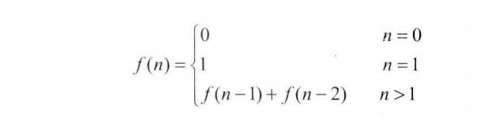
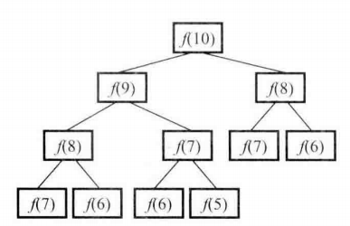
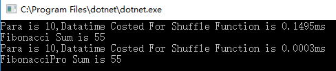
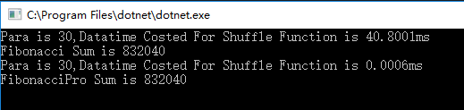

斐波那契数列，是软件人的一位老朋友了，今天我们就来回顾一下教科书上的写法以及这种写法性能上的弊端？有没有更好的写法？
1.首先，教科书的问法是求斐波那契数列的第N项；写一个函数，输入n,求出第N项目。数列定义如下：
于是接下来就会引申出递归函数的用法，以及代码（c#）实例：
1 /// <summary>
2 /// 斐波那契数列低级写法
3 /// </summary>
4 /// <param name="targetNumber">输入的目标值</param>
5 /// <returns></returns>
6 public int Fibonacci(int targetNumber)
7 {
8 //算法开始
9 if (targetNumber <= 0)
10 return 0;
11 if (targetNumber == 1)
12 return 1;
13 return Fibonacci(targetNumber - 1) + Fibonacci(targetNumber - 2);
14 }
得出结果并没有任何问题。但是这种写法可靠吗？是我们想要的吗？
我们来分析一下为什么这种写法会有很严重的效率问题。
首先我们求解f(10)，就需要得到f(9)与f(8),想要求解f(9)，势必要求出f(8)与f(7)，大家看到了吗？这种重复求解的关系是很糟糕的，并且会随着节点数会随着n的增大而急剧增大。如如下依赖关系图所示:
那我们有没有更好的写法呢？当然有，因为递归与循环本来就是一家人！如下代码（C#）实例：
/// <summary>
/// 斐波那契数列高级写法 避免重复计算
/// </summary>
/// <param name="targerNumber">输入的目标值</param>
/// <returns></returns>
public int FibonacciPro(int targetNumber)
{
Stopwatch sw = new Stopwatch();
sw.Start();
//算法开始
int[] arrayBase = {0, 1};
if (targetNumber < 2)
return arrayBase[targetNumber];
int fibNumberOne = 1;
int fibNumberTwo = 0;
int fibCurrentNumber = 0;
for (int i = 2; i <= targetNumber; ++i)
{
fibCurrentNumber = fibNumberOne + fibNumberTwo;
fibNumberTwo = fibNumberOne;
fibNumberOne = fibCurrentNumber;
}
sw.Stop();
TimeSpan ts = sw.Elapsed;
Console.WriteLine("Para is {0},Datatime Costed For Shuffle Function is {1}ms", targetNumber, ts.TotalMilliseconds);
return fibCurrentNumber;
}
写完了之后我们来看一下性能方面到底是不是节约了很多?
首先，当参数N为10的时候：
这里已经可以初步看到效率有了明显的提升！
当参数N为30的时候，
这里的性能已经有了天翻地覆的差别！
除此之外，第一种方式的递归还有可能引起严重的栈溢出，每一次调用函数都会在内存栈种分配空间，而每个进程的栈容量是有限的，若第一种解法N参数为5000，则运行时候会出错，但是第二种解法则能得到正确结果。